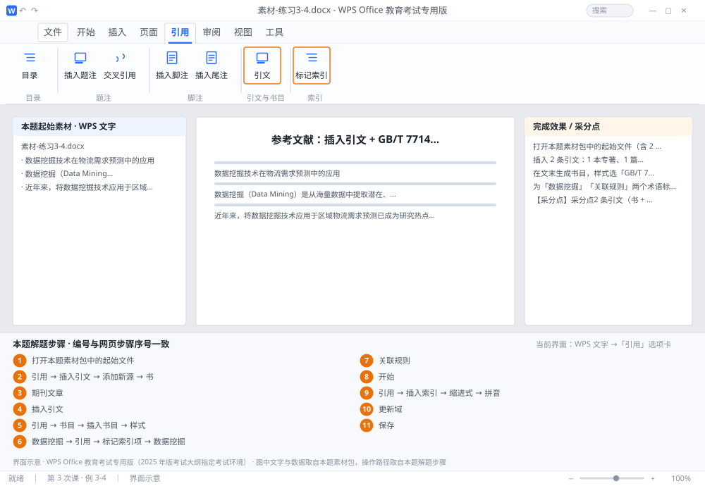

完成比对文档 · 例 3-4
参考文献：插入引文 + GB/T 7714 书目 + 标记索引项生成索引 ｜ 第 3 次课 / WPS 文字 ｜ 网页：实操-文字3.html ｜ 考试环境：WPS Office 教育考试专用版（2025 年版考试大纲指定考试环境）
用途 本页按修订后的题目要求与解题步骤生成，是交卷自查的结果基准：
逐项列出每一步应出现的可复核结果，配合模拟操作截图与解题结果文件使用。
它不是素材包的一部分，不会预置答案动作；起始素材仍从本题素材包下载。
一、本题起始素材包
目录：练习素材/练习3-4-引文与索引/ ｜
下载包：练习素材/下载/练习3-4-引文与索引.zip
二、题目要求
- 打开本题素材包中的起始文件（含 2 处需要标注文献的观点）。
- 插入 2 条引文：1 本专著、1 篇期刊论文（信息自拟，格式规范）。
- 在文末生成书目，样式选「GB/T 7714」。
- 为「数据挖掘」「关联规则」两个术语标记索引项。
- 在文末插入索引（缩进式、按拼音排序）。
- 保存为 学号-姓名-练习3-4.docx。
三、解题步骤（编号与下方核对表、截图编号一致）
- 打开本题素材包中的起始文件。找到需要标注的两处观点。
- 添加第 1 条源。「引用」→「插入引文」→「添加新源」→ 类型选「书」→ 填作者、标题、年份、出版地、出版社 → 确定。
- 添加第 2 条源。同样入口 → 类型选「期刊文章」→ 填作者、标题、期刊名、年份、卷期、页码 → 确定。
- 插入引文标记。光标停在观点后 →「插入引文」→ 从列表里选刚建的源 → 文中出现（作者, 年份）式标记。
- 生成书目。光标移到文末 →「引用」→「书目」→「插入书目」→ 在「样式」下拉里选「GB/T 7714」→ 确定。
- 标记第 1 个索引项。选中「数据挖掘」→「引用」→「标记索引项」→ 主索引项自动填入「数据挖掘」→ 点「标记」（只标这一处）或「标记全部」（全文所有同词）。
- 标记第 2 个索引项。选中「关联规则」→ 重复上面的操作 → 关闭对话框。
- 显示隐藏文字。「开始」→ 显示编辑标记，能看到 { XE "数据挖掘" } 这样的索引域。
- 插入索引。光标移到文末（书目之后）→「引用」→「插入索引」→ 类型「缩进式」→ 排序依据「拼音」→ 确定。
- 更新索引。右键索引 →「更新域」。
- 保存。保存为 学号-姓名-练习3-4.docx。
四、完成效果 / 采分点
采分点2 条引文（书 + 期刊）信息完整 · 书目样式为 GB/T 7714 且条目顺序正确 · 2 个索引项已标记（可见 XE 域） · 索引为缩进式、按拼音排序 · 索引已更新
五、逐项完成核对表
| 步骤 | 关键操作路径 | 应出现的结果（可复核） |
|---|
| 1 | 打开本题素材包中的起始文件 | 打开本题素材包中的起始文件 |
| 2 | 添加第 1 条源 | 「引用」、「插入引文」、「添加新源」、「书」 |
| 3 | 添加第 2 条源 | 「期刊文章」 |
| 4 | 插入引文标记 | 「插入引文」 |
| 5 | 生成书目 | 「引用」、「书目」、「插入书目」、「样式」、「GB/T 7714」 |
| 6 | 标记第 1 个索引项 | 「数据挖掘」、「引用」、「标记索引项」、「标记」、「标记全部」 |
| 7 | 标记第 2 个索引项 | 「关联规则」 |
| 8 | 显示隐藏文字 | 「开始」 |
| 9 | 插入索引 | 「引用」、「插入索引」、「缩进式」、「拼音」 |
| 10 | 更新索引 | 「更新域」 |
| 11 | 保存 | 学号-姓名-练习3-4.docx |
六、模拟操作截图

界面示意 · WPS Office 教育考试专用版 · 橙色编号与本题解题步骤序号一致；
图中文字与数据取自本题素材包，功能入口取自本题解题步骤。
核对方法：按网页解题步骤完成并另存自己的成稿后，逐行比对本表第 3 列的
参数、公式、区域、文件名与对象数量；再对照网页「完成效果 / 采分点」检查版式是否一致。